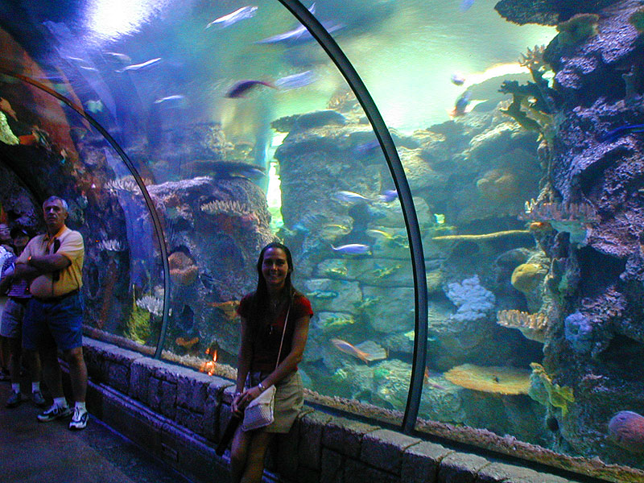

Mandalay Bay
This tank had a few really cool all white sting rays that I tried to take a picture of, but unfortunatly they were moving too fast for my camera to capture and I just got a blur as they were doing laps around the tank. It was really funny to watch a shark come up close to the ray - *bam* - the ray nailed him with his tail and the shark boogied out of there.
There was another large chamber in the Aquarium that had a ton of sharks in it including a Great Hammerhead; the only Great Hammerhead in captivity. Unfortunatly sharks swim very fast and my camera takes pictures very slow so all the shots I got are boring and blurry. It was extremely cool to see in person though
back to main page
